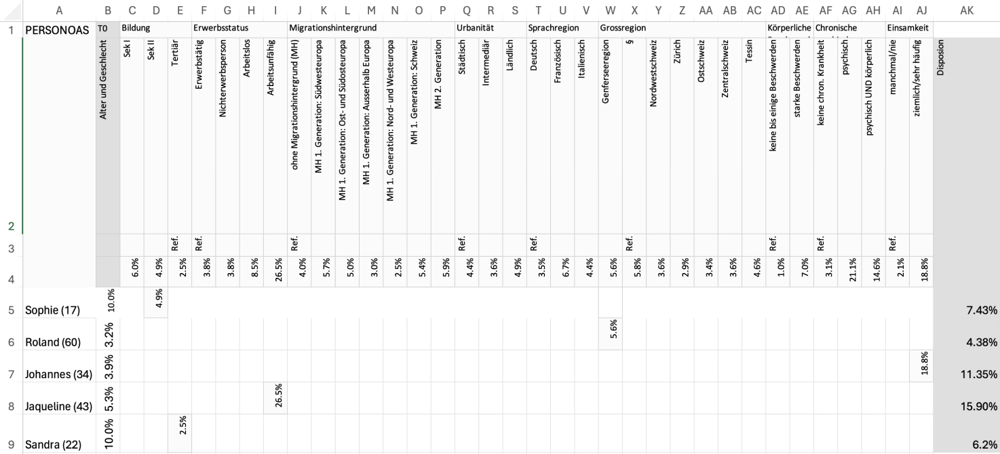

Die Beamerinstallation «Trauma Tank» zeigt auf wie unterschiedlich sich traumatischer Stress auf verschiedene Individuen auswirkt. In gewissem Sinne sind wir alle Gefässe, welche fähig sind eine bestimmte Menge an Stress zu ertragen, ohne dabei eine psychische Krankheit zu entwickeln. Doch welche Faktoren definieren die Grösse unseres Gefässes? Und wie verhindern wir, dass es überläuft?
Unser Konzept spielt mit der Metapher «Wenn das Fass überläuft». So wollten wir Personen als Gefässe darstellen die durch den Einfluss von Stress überlaufen können. Anfangs sollten die Gefässe auf 3 Dimensionale Zylinder projeziert werden. Es gab dabei aber Probleme mit Verzerrungen und es war auch kaum möglich den Deckel des Gefässes, realitisch darzustellen. So haben wir uns nach einigen Tests auf eine 2D Projektion auf Leinwände entschieden.
